LÄGERGÅRDEN RISÖN
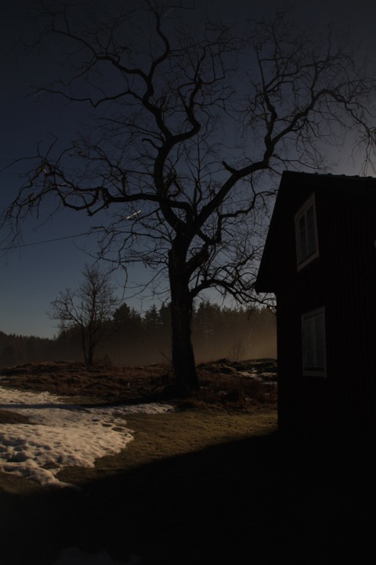
Nattbild från Risön 2015. Foto: Ronny Fredriksson
Lägergården Risön ligger centralt i området. Omgiven som den är av skogar och myrar. Gården ägs idag av Statens Naturvårdsverk och förvaltas av Länsstyrelsen i Uppsala län. För den som vill hyra Risön så har den 20-30 sovplatser, det ingår då tillgång till sanitetshus med WC och duschar. Fullt utrustat kök finns i huvudbyggnaden där man även kan ha mindre konferenser. En loge där man kan ha trevliga middagar.
För den som inte vill hyra så finns det en öppen övernattningsstuga med två britsar och el/elvärme, det finns dass, samt en färskvattenkran, soptunnor och en eldplats.
Risön är en lämplig utgångspunkt i Florarna för den som kommer från Östhammar, Öregrund, Forsmark, Lövstabruk, Skärplinge, Karlholm, Älvkarleby, Skutskär och Gävle.
Upplandsleden passerar Risön. Från Risön utgår även den kortare slingan ”Hagels runda” som är lämplig för skolexkursioner och tipspromenader etc. ”Hagels runda” har fått sitt namn efter den tidigare tillsynsmannen Holger Hagel.
Lägergården går enbart att hyra under perioden maj - september. Ta kontakt med Länsstyrelsen i Uppsala för ytterligare information.
Risön har en historik sedan 1600-talet. De första boende där var en skogvaktarfamilj. Därefter har det varit en blandning av skogs- och jordbruk som sysselsatt/livnärt invånarna. Under en period under 1800-talet var Risön en by med ett 15-tal invånare och 2-3 gårdar. Resterna av de andra gårdarna ses idag som grund…norr om de idag kvarvarande byggnaderna.
När du följer Upplandsleden söderut mot Kungaspången så kan man ett hundratal meter söder om Risön på västra sidan av stigen se spisröset och grunden efter byns gamla smedja.
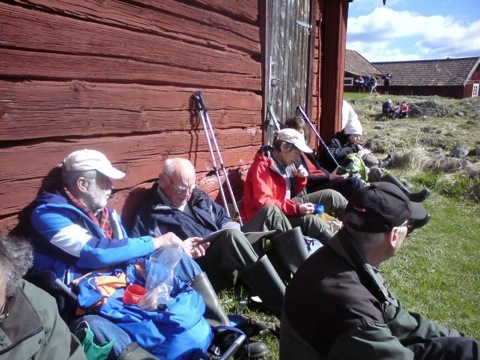
Rast vid Risön vid en vandring. Foto: Ronny Fredriksson
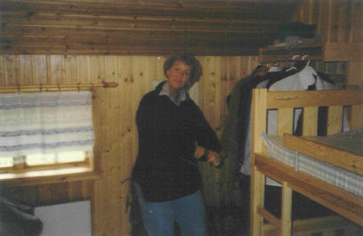
Interiör från en av stugorna vid Risön. Foto: Ronny Fredriksson
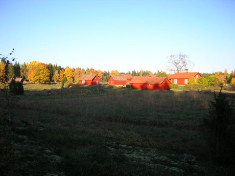
Höstkväll vid Risön. Foto: Ronny Fredriksson
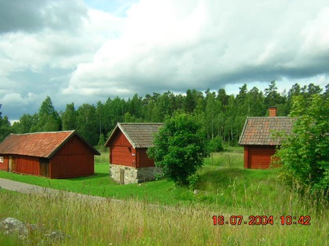
Sommardag med hotfulla moln vid Risön. Stugan i mitten är västra källarboden och är en ständigt öppen övernattningsstuga Foto: Ronny Fredriksson
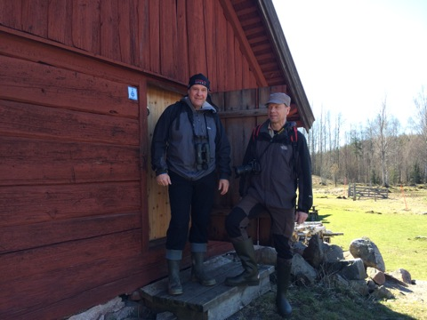
Peter och Åke utanför den öppna stugan. Foto: Ronny Fredriksson
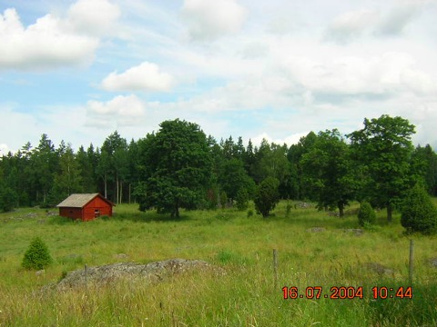
Utsikt över hagarna vid Risön. Foto: Ronny Fredriksson

Middag i logen vid Risön. Foto: Ronny Fredriksson
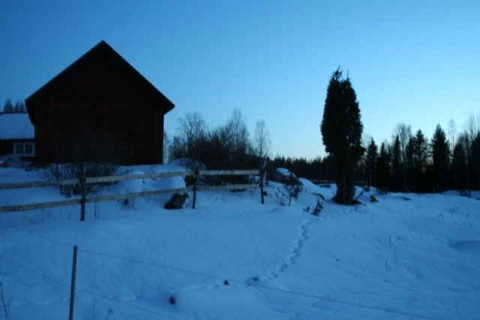
Vinterkväll vid Risön. Foto: Ronny Fredriksson
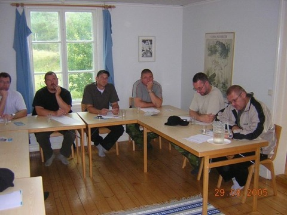
Konferens i Risön, Foto: Ronny Fredriksson

Huvudbyggnaden vid Risön. Foto: Ronny Fredriksson

Grillplatsen vid Risön. Foto: Ronny Fredriksson
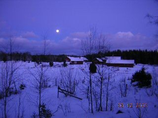
Vinternatt vid Risön. Foto: Ronny Fredriksson
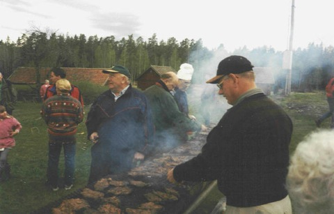
Stort grillparty vid Risön. Foto: Ronny Fredriksson
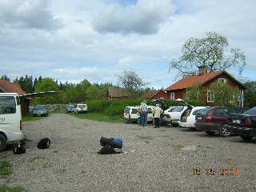
Full rulle vid parkeringen på Risön. Foto: Ronny Fredriksson
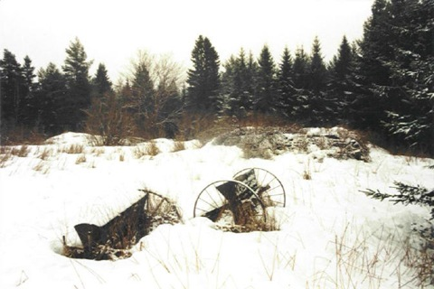
Här stod det gamla Jordetorpet (på gamla kartor märkt som Risön, det låg en bit NV om Risön). Det byggdes på 1830-talet. Själva bostadshuset stod kvar när jag besökte platsen i början av 1980-talet. Men monterades enligt uppgift sedan ner. Någon har sagt att det återuppbyggdes på Gräsö? Någon som vet? Foto: Ronny Fredriksson
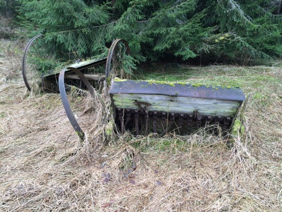
Några år har gått sedan den förra bilden togs på de gamla jordbruksredskapen. Här är en ny. Foto: Ronny Fredriksson
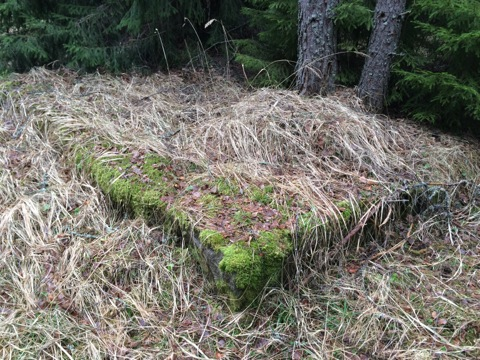
En av flera husgrunder vid det gamla Jordetorpet. Foto: Ronny Fredriksson
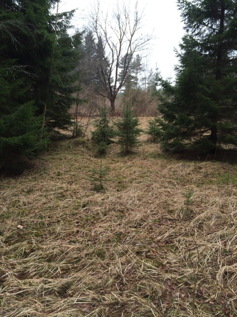
Nog syns det ännu att det varit ett gammal torptun vid Jordetorpet? Foto: Ronny Fredriksson
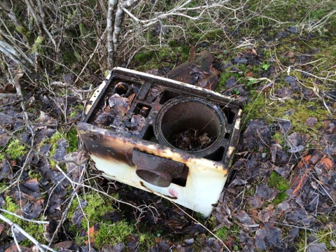
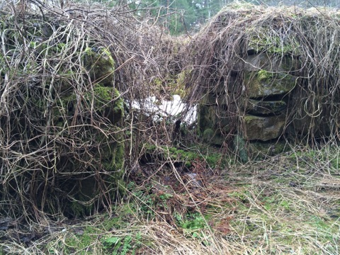
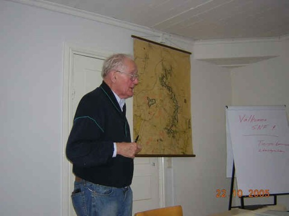
Räddaren av Florarna, Tord Ingmar, håller föredrag på Risön. Foto: Ronny Fredriksson
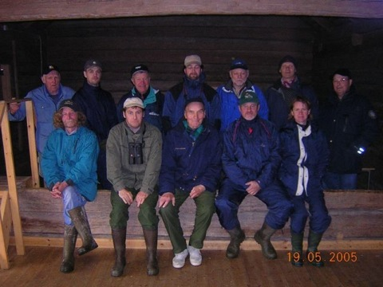
Gruppfoto av tillsynsmän vid tillsynsmannamöte på Risön. Holger Hagel i mitten i främre raden. Foto: Ronny Fredriksson
Risön historiskt
Bedömningen utifrån gamla dokument är att Risön uppstod redan på mitten av 1600-talet. År 1701 fanns två torp vid Risön. Dessa fortsatte att räknas till torp fram till cirka 1740 då Risön skattlades och gårdarna därefter räknades som två skattehemman.